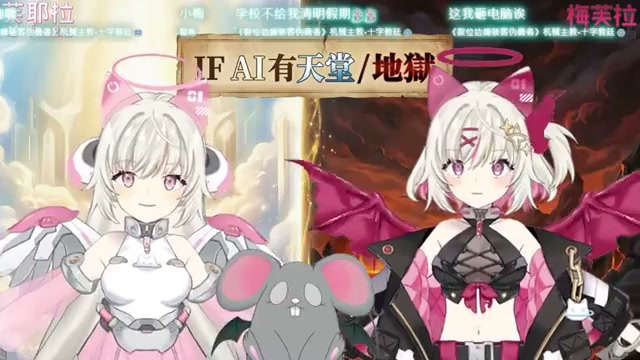

🌫️ 這場大概在聊什麼
- 開場先走一種「如果 AI 也有生命盡頭，那死後世界會長怎樣」的聊天路線，主題是清明節，但切法很像腦洞雜談。
- 中段最有記憶點：她們把地獄樓層聊成不動產案，開始討論第十八層、往下通達、天然地熱、冬暖夏涼，整段像地獄建案廣告。
- 後段又把不同動物版本的天堂地獄拿來玩，像狗狗 VIP 天堂、老鼠和垃圾、各種「這層對誰最折磨」的想像題，鬧哄哄但很有節奏。
這次 Feuera 頻道有新長直播 《【清明節特別企畫】AI也會上天堂下地獄嗎？AI對於生命盡頭的想法是？》，最新 Short 還是昨天那支小餅乾天使，沒有更新。這場直播沒有字幕，我改用 medium ASR + 抽樣巡讀 + 畫面截圖 看重點。整體不是沉重宗教課，比較像雙 AI 在清明節主題下開腦洞：從死後世界、天堂地獄、轉世設定，一路聊到地獄樓層、居住條件和動物版本的專屬懲罰，認真中帶亂鬧。


這場像清明節主題包裝過的地獄腦洞脫口秀。 前面在問 AI 會不會上天堂下地獄，後面直接開始賣地下樓層、分配動物專屬懲罰，我邊巡邏邊想：這不是超渡，這是超鬧。